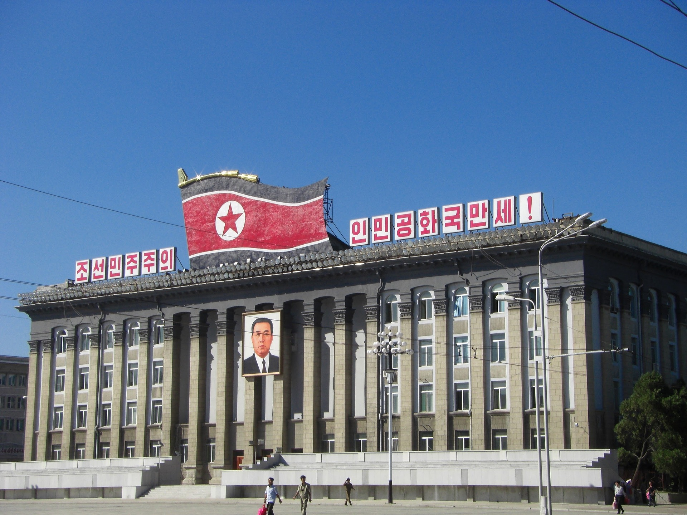

- Marxist Communism:
- Based on the ideas of Karl Marx, Marxist communism envisions a classless society where the means of production are owned collectively and goods and services are distributed according to need. However, this has rarely been achieved in practice.
- Authoritarian Communism:
- In authoritarian communist systems, a centralized government exercises strict control over the economy and society. Individual freedoms are often limited, and dissent is suppressed.